In this post we discuss one specific method of surfing the MWI- “World-Line” or “Time-Line” travel for those of you who like those terms. I know of four methods. For the most part, humans need to stick to their own pre-defined realities and utilize other techniques as necessary to learn and obtain information and experiences.
Vehicles are often utilized when there are NO pre-defined clear destination coordinates when exploring other “world-lines”. These are typically similar to the destination environments and are used to house the often large equipment needed for MWI egress.
In other posts, I have discussed the benefits of using roads to conduct MWI (world-line travel) into our reality. Here, in this post, I would like to elaborate on that situation…
Introduction
Important Note: This post specifically concerns (so called) "world-line" travel. Which in fact, the actual activity is actually considered as "MWI surfing". The term "Time Travel" is a specific subset of this technique in which the time coordinates are changed. This post does not intentionally or knowingly discuss that aspect of the MWI slide.
There is every indication that vehicles are sometimes used to enter and leave our “reality”. They travel on our roads. This is simply because roads are more or less, a long lasting and stable fixture. Roads tend to be predictable within the dimension of time.
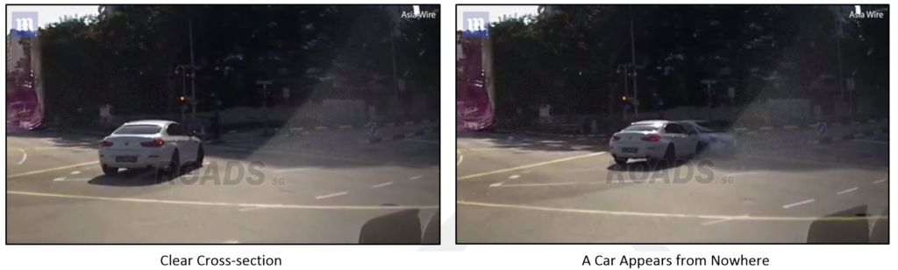
Roads are typically the ONLY stable long-lasting features on this ever changing planet. A field in 1965 becomes a gas station in 1973. It then changes into a warehouse in 1990, and then is torn down and made into a parking lot in 2010. What will happen in 2055? Maybe it will be a park, filled with trees and shrubs. As such, who can predict when and were a tree might grow, or where a lake might come into being?
However, the road in front of that 1965 field will (more than likely) still exist.
In fact, the longevity of road intersections is even more guaranteed than individual roads. With a near certainty that the road will never be completely blocked off, instead detours along the edges will be provided to the drivers. Those wishing to utilize vehicles for dimensional and / or time travel would be able to utilize existing roads to teleport to and from. Depending on the traffic, a car might occupy a given physical location of a mere fraction of a second. This is a mighty small period of time to allow and permit materialization of an inward-bound vehicle from another dimension.
The Benefits of Using Roads
Roads are stable. A given road might exist for hundreds of years. This is obvious in terms of the dimension of time. What is not so obvious is that this is also true for MWI surfing and slides. The roads serve as stable and flat places for world-line, or MWI access points.
However…
In "regular" geometry, a line contains an uncountable infinity of points, though any two points determine a line. A line can contain an infinite number of points. A line can be as long as it wants to be, but in order to considered a line, it has to have at least two points. -Answers, UK
Intersections are even more stable than roads. They have defined geopositioning spacial coordinates. Ask any mathematician. A line can have an infinite number of points on it. While an intersection can have only one point.
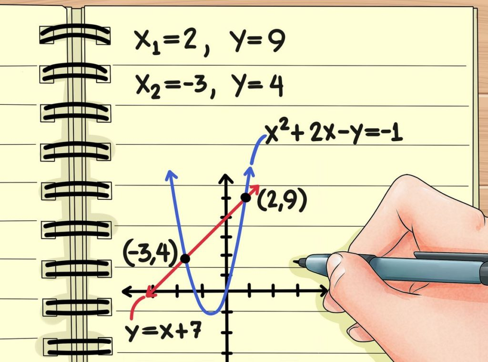
Thus, it is a much more precise coordinate from which to calculate a given destination.
As should be obvious to anyone who has ever watched the movie series “Back to the Future”. You need to be able to arrive on a stable flat surface that does not have trees, buildings, or obstacles that you might run into and hit.
Let R. Crumb Tell the story…
Artist R.Crumb has a series of drawings that depict our changing landscape. While it is fun to look at, there is some real truth in what he is trying to portray. We assume so many things.
We tend to assume so many things.
For instance, let’s suppose that you want to travel back in time, and you know that a road existed at the turn of the century. You decide to go back then and egress on the road. No problem, right? You are going back before the invention of the automobile.
So, you go back.
You arrive and… SPLAT!
A trolley-car hits you right when you arrive. Dimensional travel is like that. You cannot take anything for granted. You cannot assume anything. And, like the Commander told me when I joined MAJestic, you are on your own and will have no support group when you work to complete your tasks.
You have got to be careful.
Consider what R. Crumb illustrated…
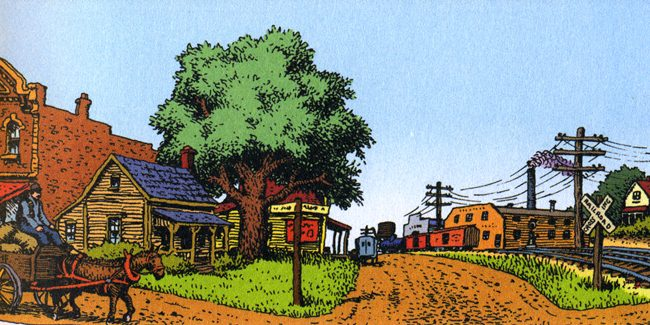
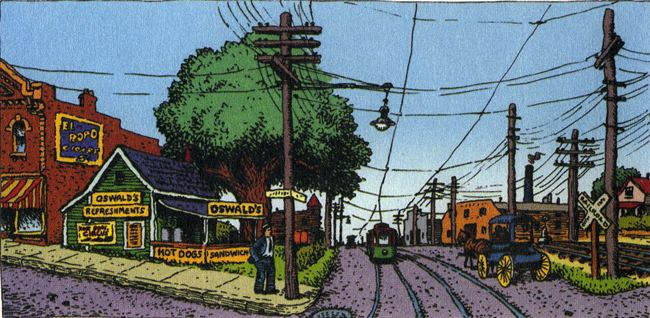
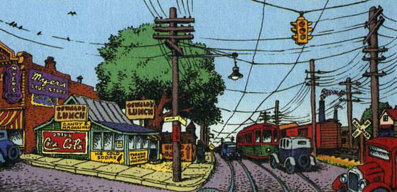
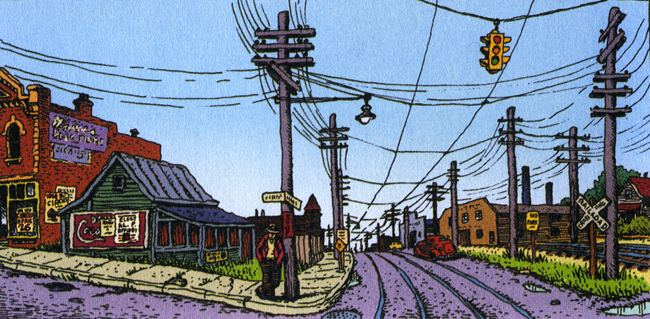
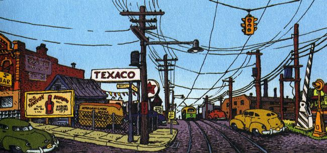
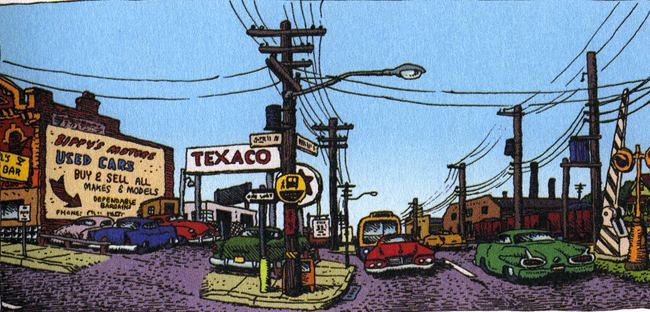
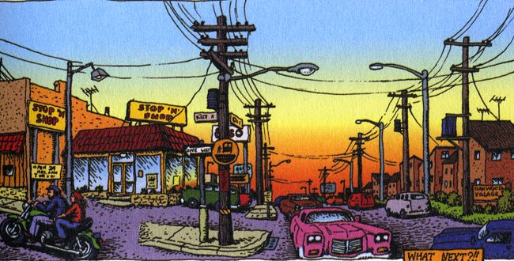
Ah, but what next?
We do not know. This is because the apparent concept of time is firmly rooted in the entropic decay of our bubble of reality. That is WHY time always seems to be a straight unchanging line. It is simply because we are inside a bubble of reality. Now, we can change this bubble somewhat. We can alter it though our thoughts… that is as long as the thoughts are in alignment with the mass migration of other thoughts with other people.
However, if we wanted to migrate to another bubble of reality all together, we would need some equipment and machinery to do the “heavy lifting”. As such, we could not only specify coordinates of the type of reality and the “flavor(s)” of it, but we could specific geographic coordinates and time coordinates as well.
It would be a “time machine” device.
Here, R. Crumb suggests some possible futures based on his earlier work. If you had the proper equipment, you could surf the MWI and visit each and every one of them, were that your prerogative. For instance, you could opt for a post-ecological disaster world, were that to your liking…
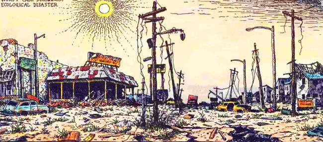
Or, maybe you want something more High-Tech and futuristic. Maybe some kind of retro-future as envisioned in the 1950’s and the 1960’s. Here, R. Crumb offers us this glimpse…
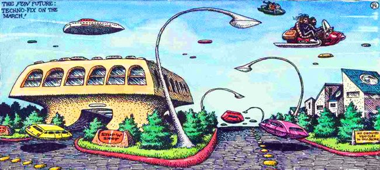
Or what about something much more sensible. How about something that blends with the entire ecology of the earth that we inhabit. R. Crumb offers this glimpse…
The John Titor Statement
In the previous section we started to look at elements of (what I refer to as) “high strangeness”. One of the aspects that we looked at involved the use of vehicles to enter and leave our reality. They are not using the transport portal like I used in the Navy. They are doing something else altogether.
Now consider that, for a second. If there are people entering and leaving our reality, and they are using an automobile as the vehicle to do so, then could there be some kind of disclosure that might present more information on this phenomenon? And, if so, then what would that disclosure looks like?
"Theories have four stages of acceptance: i) this is worthless nonsense; ii) this is an interesting, but perverse, point of view; iii) this is true, but quite unimportant; iv) I always said so. - J.B.S. Haldane, 1963
Well there is just such a disclosure. There really is. However, it is a very difficult one to believe as it sounds so absolutely outlandish that it “must” be a hoax. (Not to mention that it has been “disproven” by Snopes (LOL), and is considered by many (people, children, and possibly herd animals) to be a hoax.) Well, then, isn’t that a basic criterion for use to start from? We must look at what “just can’t possibly be” to study what actually is.
Dear readers, let me present the John Titor story…
This is the first fax sent from John Titor to Art Bell on July 29, 1998;
“Dear Art, I had to fax when I heard other time travelers calling in from any time past the year 2500 AD. Please let me explain. Time travel was invented in 2034. Off-shoots of certain successful fusion reactor research allowed scientists at CERN to produce the world’s first contained singularity engine. The basic design involves rotating singularities inside a magnetic field. By altering the speed and direction of rotation, you can travel both forward and backward in time. Time itself can be understood in terms of connected lines. When you go back in time, you travel on your original timeline. When you turn your singularity engine off, a new timeline is created, due to the fact that you and your time machine are now there. In other words, a new universe is created. To get back to your original line, you must travel a split second father back, and immediately throw the engine into forward without turning it off. Some interesting outcomes of this are: One, you meet yourself. I have done it often, even taken a younger version of myself along for a few rides before returning myself to the new timeline and going back to mine. Two, you can alter history in the new universe that you have just created. Most of the time, the changes are subtle. Sometimes, I’ll notice car models that don’t exist, or books that come out late. The oldest one was a skyscraper that wasn’t built in a near favorite store of mine in New York. Interestingly, when you travel in time, you must compensate for the orbit of the earth. Since the time machine doesn’t move, you have to adjust the engines so you remain on the planet when you turn it off. Unfortunately, it was also discovered that anyone going forward in time, from my 2036, hit a brick wall in the year 2564. Everyone who has ever been there has reported that nothing exists. When the machine is turned off, you find yourself surrounded by blackness and silence. Now, most time travelers are trying to find out where the line went bad by going into the past, creating a new universe, and proceeding forward to see if the same thing results in 2564. It appears the line went bad around the year 2000. I’m here now, in this time, to test a few theories of mine before going forward. Now, for the future you might want to know about. One, Y2K is a disaster. Many people die on the highways when they freeze to death trying to get to warmer weather. Two, the government tries to keep power by instituting marshal law, but all of it collapses when their efforts to bring the power back up fail. Three, a power facility in Denver is able to restart itself, but is mobbed by hundreds of thousands of people and destroyed. This convinces most that maybe we shouldn’t bring the old system back up. Four, a few years later, communal government system is developed, after the constitution takes a few twists. China retakes Taiwan, Israel wins the largest battle for their life, and Russia is covered in nuclear snow from their collapsed reactors. Art, the reason I’m here now is because I believe a nuclear weapon set off by Iraq in the Middle East war with Israel might have something to do with the damaged timeline. I will test that theory and get back to you. Please pray that we discover the reason why there is no apparent future after 2564.”
This fax does not agree exactly with other information posted on the Internet. This is a point that is not lost on others.
“Comparing the 1998 fax to the John Titor story that occurred a couple years later on the Internet, you can see that the “plot” changed somewhat. There’s no mention of an IBM 5100 in the 1998 faxes, and in 2000-2001, there wasn’t any focus at all on this mysterious “blackness and silence” in 2564, nor any reference to a damaged timeline. Perhaps the mission changed. Or maybe just the story. It’s possible, even, that the author of the faxes wasn’t the same person, that someone else snatched up the story, made a few changes and ran with it. But that’s just meaningless conjecture. I’ll leave you with this final thought: something’s weird about this first fax. I’ve transcribed it directly from a recording of the originally aired episode. The line Art reads, “The oldest one was a skyscraper that wasn’t built in a near favorite store of mine in New York,” is fairly strange, not just for its content, but for its structure. It’s often reinterpreted as “The oldest one was a skyscraper that don’t exist in New York.” Now, we can obviously understand what the other interpretation means, but “wasn’t built in a near favorite store of mine in New York” is just weird. Perhaps it was a typo on the fax, or Art misread it. Some, however, theorize that the original recording was edited, that the original content was obscured to hide…something. Or, perhaps, to add something. There are rumors that the audio, for whatever reason, was changed, and so multiple versions are floating around cyberspace.”
Ok, ok. I don’t to get too hung up on this dude.
I am mentioning him simply because he claims that he uses vehicles to travel in and out of time, via world-line egress. This is in agreement with what I know, and what is presented herein.
As far as he is concerned, I have no idea. I will cover him in another post. For now, let’s just set him aside.
Example 1 – Black SUV
Here is good example. In this case, a car “pop’s” into existence right in front of another car as it is making a turn. Of course, the old argument is that it is an optical illusion. You simply cannot see the car because of the odd viewing angle. It is a possible scenario. Yet, I will continue to use it as an example of how a given species, or even the United States government can use the 1980’s technology that I was exposed to, to transit to various locations at various times.
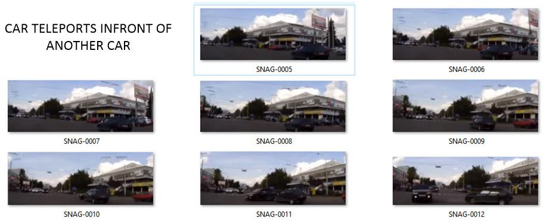
Notice that the roads are wide and clear. There is no evidence of any hurried traffic or difficult driving conditions. However, all accounts the car simply “pop’s” right into existence directly in front of the car. Study frame 0010. Compare that to frame 0011. The size of the car can be determined by frame 0011. As such, the rear of the car should be visible in frame 0010. It isn’t.
The car “popped” into existence in front of a car making a turn and was hit by that car. I sure would like to see the discussion that the two drivers had after the accident. Unfortunately, the faces of the drivers are obscured.
This specific event can be viewed on the following video.
Please note that this video has other examples of fakes and hoaxes interspersed in it. Also the voice over and music track leaves much to be desired. Please turn off the audio and watch the video free of “Halloween style” or “B-grade movie” music. https://www.youtube.com/watch?v=M_Hwlws9b1g&feature=youtu.be Watch from 1:16 to approximately 1:47.
Example 2 – White Midsized
This is pretty common. There are all sorts of videos on the Internet that depict these kinds of events. Some are “better” than others. Meaning that some videos simply depict actual occurrences that simply show that one vehicle is well hidden and not easily viewed, yet if you study the video you can see elements of the other car if you look carefully. However, there are “better” reports that show the “impossibility” of a “hidden” surprise car. These other videos clearly show the car appearing “out of no where” right in front of a different car. Here is one such video.
The reader can see the video here; http://video.dailymail.co.uk/video/mol/2017/10/18/3136425883458422863/640x360_MP4_3136425883458422863.mp4
Here are two screen shots that show the “before” and “after” snapshots of the event in question.
The information is provided for the reader to come to their own conclusions.
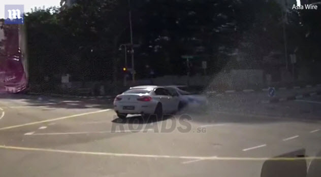
Example 3 – Black Midsized
In this example, we have yet another example of a car teleporting in front of a car. Strangely, this car looks very similar to the car above. Wouldn’t it be something if it was the same car, which somehow managed to materialize in front of different cars in different places? In this case, it wasn’t hit (Phew!)
Again, the car materializes in the middle of an intersection. It is clearly shown that the cars waiting at the intersection (where the car supposedly comes from) are white or light colored. Yet, here we have a black car, much like the one in the earlier instance somehow getting in front of the big white truck and the small white sedan and teleporting directly in front of the car making the turn.
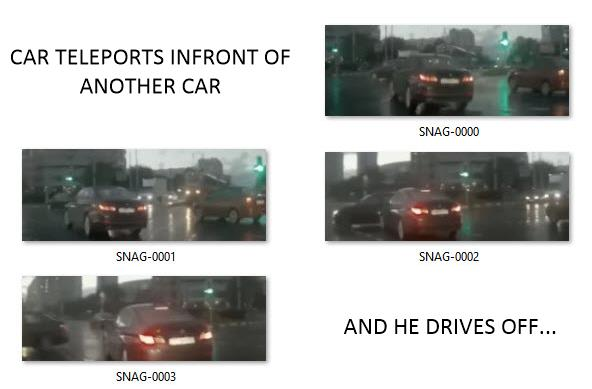
It should not take too much time to look at where the mystery black car came from. After all, if it came from the intersection, then it had to have been parked waiting at the intersection like all the other cars. We know this because it obviously was not going in the same direction, and was not to the right side of the cars that turned into the cars. So obviously, if it was not a teleportation, then it absolutely had to be parked and waiting at the intersection. However, it was not. Where was it?
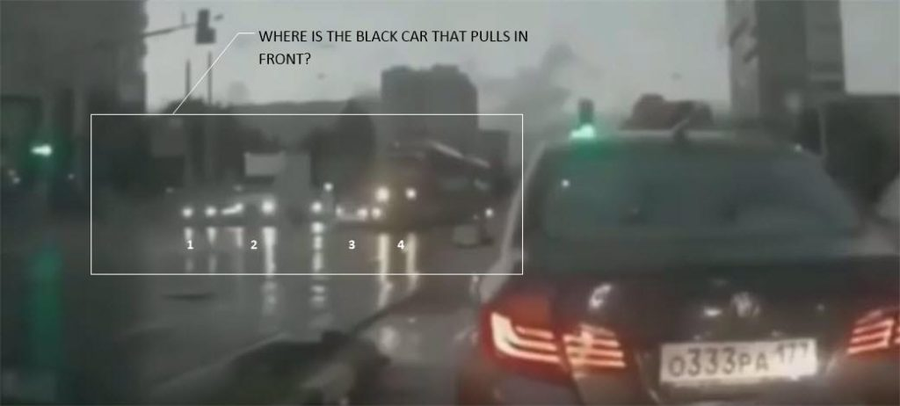
Car #1 looks dark, so it could be that car. Though we later discover that it didn’t move and stayed in the position. Vehicle #2 is a large white truck. Vehicle #3 is a small white van, and vehicle #4 is a big bus.
Now, look at what happens after the collision. Vehicles #1 and #2 are still there waiting at the red light. So where did the car come from? It could not be a trick of the eye because if it did not come from the line of parked cars, and did not pass on the right side, then it absolutely had to materialize just as was recorded on the video. After all, the only car that was on the right was a red car.
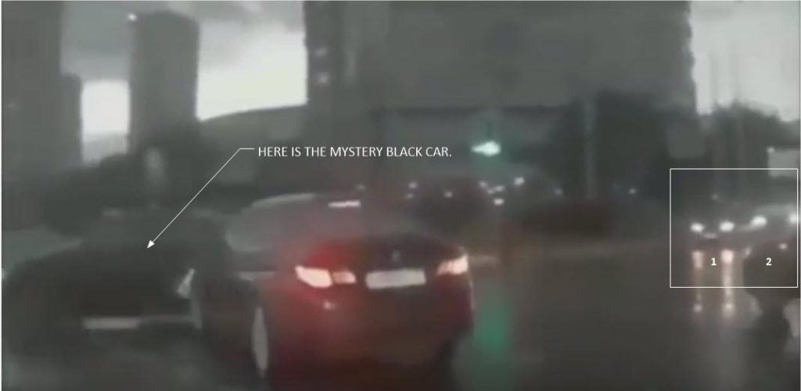
This specific event can be viewed on the following video.
Please note that this video has many other examples of fakes and hoaxes interspersed in it. For the most part except for this section, and another one mentioned previously, this video is just nonsense. Really. It also induces some idiot who claims that he is from the future. Please ignore the bullshit. Additionally, the voice over and music track leaves much to be desired. Please turn off the audio and watch the video free of “Halloween style” or “B-grade movie” music. https://www.youtube.com/watch?v=Hn_zXuCnDKc Watch from 4:38 to approximately 5:13. The rest of the video for the most part is sensationalized fictional garbage.
Why Intersections?
As stated previously, intersections can provide precise geolocation coordinates. Remember, the earth moves. There are earthquakes and events. Plus, of course, the MWI does and can create variations in geography. You need to be careful. The more specific the coordinates the better for the agent.
Here is a road map somewhere in England. Highlighted are three potential egress locations that might be preferred over other areas if you were using geospacial coordinate tracking vectors. FYI.
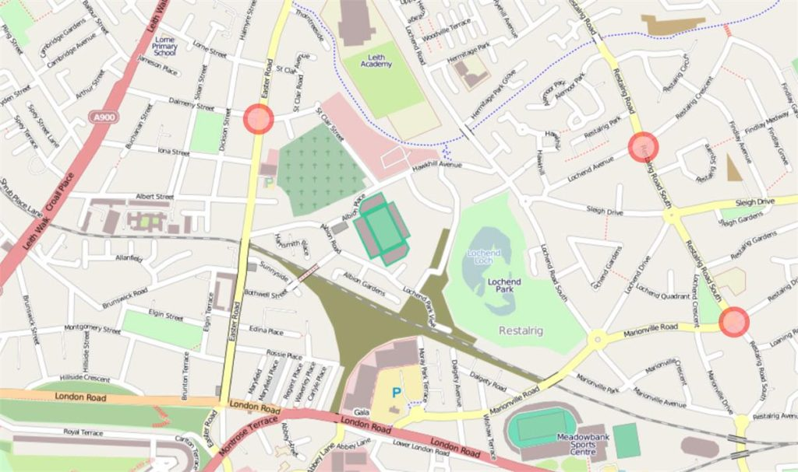
Non-Intersection Example
One of the best examples of what a true and real teleportation looks like, and what I experienced back in 1981 was caught on video camera. It can be seen at https://youtu.be/l_POTJgVK0Q . Here, at night, a car exits through a portal just identically to what I have been trying to describe all along. There aren’t any flashes of light, noises or fading in or out. It is as if one passes through a door or a line just hanging in space.
In frame 0000, we see a normal road with cars at night. This continues in frame 0001.
However in frame 0002, the front end of a car appears. All you can see is the front headlights and about 50% of the hood over the engine. In frame 0003, the front end of the car is exposed, but the rear of the car is still invisible. In frame 0004, 80% of the car is visible, and in frame 0005 the car has completely exited the portal and drives down the road.
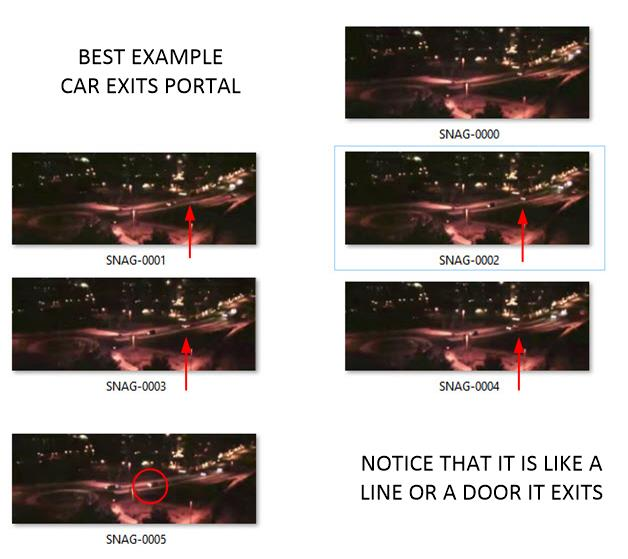
I state that this is the best example, even though the video and picture quality is so low, as it shows the clear boundary of the transport portal. It is exactly as I have described. To an outsider or to the observer it appears like a line or a door that one walks through. To an observer in the car it would be like entering a large slowly rotating invisible grinder.
Whether this is a dimensional portal, a time traveler or simply a teleportation window is unknown to me. I do not know the true nature of the device that I was involved in when I entered the program in the Navy. However, what I do know is that this type of technology is being used now, today in the movement of vehicles on public roads. That much is clear.
Here is a blurry close up of the event with a superimposed line to show the apparent location of the dimensional door or portal. Notice that in frame 0006 only one headlight exits the portal. By frame 0007, both headlights have exited. In frame, 0008 one half of the car has exited, and in frame 0009, most of the car has exited the portal. Indeed, by the final frame 0010, the entire has exited the portal.
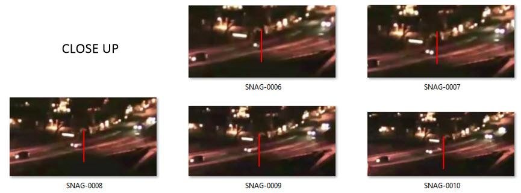
This specific event can be viewed on the following video. Unlike the other videos, this video is dedicated to specifically this event, and only this event. Therefore it is in the preferred format for this manuscript. https://www.youtube.com/watch?v=l_POTJgVK0Q&feature=youtu.be Watch the entire two minute video. The entire video discusses this event.
What about Egress?
All the previous examples were of vehicles suddenly appearing “out of the blue” into intersections. What about vehicles disappearing? What about vehicles leaving our reality?
Since they know where they are, they don’t need to enter a world-line MWI at a stable geopositioning point and coordinate. They can leave from any point.
Here is an example…
Egress Example
Car disappears right in front of the dash-cam. One minute it is in front of a car…
And then within one second the car disappears…
This specific event can be viewed on the following video.
Please note that this video has other examples of fakes and hoaxes interspersed in it. Also the voice over and music track leaves much to be desired. Please turn off the audio and watch the video free of “Halloween style” or “B-grade movie” music. https://www.youtube.com/watch?v=YuP6H8cz72I Watch from 2:07 to approximately 3:38.
The Reality of the Observer
One of the arguments “against” the issues raised in the previous “High Strangeness” chapter is that the observed events “could have been easily explained” if there were another observer, or camera. The argument goes like this, if there were two observers, they could collaborate their stories to figure out what was actually occurring. Perhaps, the argument goes, if there was another viewpoint it would become clear that it was “just” an optical illusion. Thus, nothing out of the “normal” was observed.
This viewpoint has merit. If one studies the videos, frame by frame, it is almost as if some kind of Photoshop wizard expertly erased missing sections of controversial imagery to make the video appear as it does.
This is, undoubtedly a possible scenario. Certainly, someone with a large budget, software talent, and a penchant for annoyance would or could desire to create some controversy.
Consider the diagram below. The simple diagram describes an accident between two vehicles at a cross road. Car “A” impacts car “B”. The impact is observed by vehicle ‘O1” (Observer #1.)
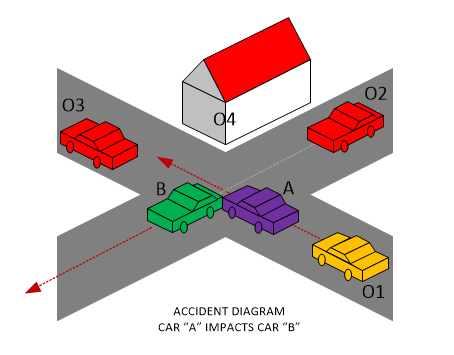
For many of the skeptics in the audience, the issue of whether these are “real” events as observed by the observer or whether or not they are hoaxes could be cleared up were there to be secondary observers. These secondary observers could be a trailing vehicle in car “O2”, a waiting car at “O3”, or even a non-vehicular observer at stationary location “O4”.
I however, take a totally different viewpoint.
My point is that each reality is germane to the observer itself. We do not share one unified reality. Rather we each occupy our own reality, and the observed events are specifically directed for us and us alone. The “others” that share our realities are but “quantum shadows” that appear to participate actively but are in all actuality just “stage props” in our world-line.
Each reality is germane to the observer itself. We do not share one unified reality. Rather we each occupy our own reality, and the observed events are specifically directed for us and us alone.
Therefore, with this point of view, it is clear that what we observe is ONLY the reality that truly exists. There isn’t a need or even the open possibility of a secondary or even tertiary observer. The events “collapse” upon themselves upon the transport into the current world-line reality. The only observers that “matter” are those actually “observing” the event. And thus, they, and they ALONE observe the quantum event.
This is the best example that I can think of of how quantum level events manifest into a macro-sized event within a world-line reality.
Further Research
There are numerous recorded examples of this. Various examples mentioned here in the manuscript were pulled from public videos found at these various Internets URL’s.
As always, these videos are filled with “horror style” music tracks, dramatic voice overs, and a general theatrical ambiance. I suggest the reader turn off the audio and ignore most of what is portrayed in the videos as they are designed to frighten, and not for anything other than curious inquiry.
This is a typical video of the horror-style ilk. Personally, I think it is designed for 12-year olds in mind to view. At least that is the way it is presented. Sections of note include;
[1] 0:42 to 0:54 [2] 4:36 to 5:12 [3] 19:27 to 20:00
Everything else in the video is suspect. Personally, aside from the three specific instances listed, I believe all the rest are staged fictional events created for the purposes of profiting from the video. They are all nonsense.
This is another video of this ilk. Most notable is the “scary” electronic music that is intended to imply the “strange and the unusual”. The authors probably have hundreds of such videos. I suppose they are enjoyable for those children who like scary night-time stories, for the rest of us, it is but an irritation. They do have a section of note.
[1] 0:23 to 1:47.
This entire video revolves around an actual event. If one can turn off the audio and just watch the video, it will make more sense.
Some of the stuff here is good. At least it isn’t staged fictional events intended for a gullible audience. Without reading too much into what is presented, I suggest the reader turn off the audio and jump to the key sections;
[1] 2:10 to 2:40, [2] 5:56 to 6:18.
The rest of the video has questionable content.
Many of these events are shared on different videos. As before, ignore the audio. The reader can turn it off, and concentrate on the video presented without the frightening background music. Section of note are…
[1] 0:53 to 1:33 [2] 3:18 to 4:07 [3] 5:05 to 5:44 [4] 6:47 to 7:12
There is the possibility that the accident described at 0:53 might be due to the “hit” car traveling at the same speed as the other car, but obscured by the angle of approach. I have viewed the video repeatedly and this is a possibility, as I “think” there is the possibility of the trunk of the “hit” car observed to the right of the black car in the video. I leave it up to the reader to decide and discern.
For further investigations
These events are common enough that they can be found throughout the world. All one needs to do is search the words “mysterious”, “strange”, “car”, “nowhere”, or “surprise” in the language of the host country. The reader will be absolutely surprised at the number of findings.
Here are just a handful of examples to get started with…
- Strange car accident – man from nowhere
- Eerie moment ‘ghost’ car appears from nowhere causing crash at busy junction
- Strange video truck appears out of nowhere, page 1
“Came across this video to share, its of a stretch of road I'm really not sure where. But these accidents keep occurring at roughly the same spot. The crashes themselves are crazy but at 0:58 seconds there's this truck crash where, a second truck appears out of nowhere and it appears to have a head on collision with oncoming traffic. Strange! Its not in English but the comments generally just ask about where the truck came from.”
- Have you encountered weird “people” appearing out of nowhere and/or disappearing into thin air?
“These "people" tend to wear clothes that are not quite right. Like they are trying to imitate fashion but can't quite do it. The fabric is wrong. The style is wrong. It looks both futuristic and old fashioned. Everything in you screams that they're not normal. I was afraid to touch the guy I saw. They look perfect, too perfect.”
“I have also experienced this, at least once that I can clearly recall. The man demonstrated supernatural abilities, as if to try and prove something, like popping out of thin air wasn't enough to scare the crap out of me. He said something to the effect "we need to talk", but in truth at that point I was way to freaked out to talk, it happened on a busy street and he had stepped onto the sidewalk out of thin air only moments after making a part fall off my brand new bike to which he had done to stop me walking, or presumably. I put the piece back on my bike with shaking hands and he just "made" the piece fall off again by what I assume was sheer will, second time I picked it up but was way too freaked out to put it back on. At that point he said in a calm voice "see this is real, otherwise how could I do that?" he pointed to the bike, and then continued speaking in a calm but authoritative voice "we need to talk." He looked like a normal person with the exception that his clothes look present day but yet he looked out of place and oddly surreal but I can't say why. I didn't know if he was human, alien, demonic, all I knew was this was impossible and shouldn't be happening in broad daylight, on a busy street of large downtown city and it was freaking me out badly. I remember telling the man something to the effect "No I am leaving I don't want to talk to you, I am going now!" to which he said something to the general effect "you can walk away but we are not done talking" he said more but I was moving away and was too scared to listen. I turned to see if he was following me, and again, I watched him step off the curb, onto the road and disappear into thin air, as if there was an invisible door there. Just like how he appeared. Many years later I still don't know what to make of the experience but had an impulse to good key words and on this and see if other had such experiences.”
- There is this strange video from Russia.
Fakes and Hoaxes
For starters, let us tackle the issue of hoaxes and fraud. The Internet is full of them. However, not everything is a fake. There are occasional jewels out there if you know what to look for.
There are many fakes and hoaxes on the Internet. Many of which are very well done. (Thanks to modern computer technology.) The links listed above have about 80% fake or hoaxes interspersed with a mere handful of authentic examples.
In general, let it be understood that the technology that I was exposed to did not create any flash or light, EM disturbance or anything like that. Thus, any video or photo that shows someone or something disappearing with an associated flash, CGI effect or the like is a hoax. (At least, that is what I believe, based upon my own experiences.)
In addition, there was no molecular disappearance or fading effect, it was actually a “blinking effect” (in the mind of the person being transported) that occurred in a very short period of time. So, if there is a fading effect that lasts longer than one half of a second, then that too is suspiciously considered to be a hoax.
Flashes
Everyone just loves the “Hollywood” CGI effects. They just cannot help themselves. It is like those old Kung Fu movies where they had to add all kinds of sound effects such as snapping chairs, breaking wood, and thuds to “enhance” the movie effect during a Kung Fu fight.
Yet, in reality, a true and real Kung Fu fight is a rather quiet event. You just simply do not hear bones breaking, and wrists snapping. If you do not believe me then attend a show. It is a quiet affair.
It’s the same reason why the old original television series Star Trek would have a “swooshing” sound when the spaceship Enterprise flew past the screen. (This was during the opening credits.)
Certainly, there is no air in space, thus no sound. However, the sound effect was placed there to give the illusion of movement and speed. It was a “creative license” that provided the theatrical environment. It was a decision the Gene Rodenberry made to provide the illusion to the television viewing public. The truth is; movies are all just make-believe.
Movies are all just make-believe.
However, people don’t realize this simple fact. In reality, life is not as if it is portrayed in the movies. Things can and do happen, but they are often quiet and unspectacular; boring, even.
Consider the preference in using CGI effects to create a video (supposedly) depicting a teleportation event.
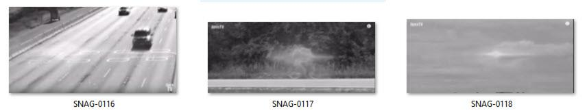
The above are some examples of uploaded videos that supposedly depict teleportation events. In each one the entity or vehicle disappeared in a flash. The screen captures shows the overall shape and form of the residual “Hollywood” style flash.
Frame 0116 supposedly depicts a car that just flashed into nothing while viewed by a highway cam. It was most certainly a hoax. Curiously, the shape and size, and CGI effect is identical in the second frame 0117.
In that hoax a youthful young man in his 20’s rode his bicycle into nothing and disappeared. (The two hoaxes were probably made by the same person.)
Finally, in frame 0118 we see the same kind of CGI effect used to promote the notion that a plane flashed into nothing. That is the most ridiculous of them all as all planes have to file a flight plan and are tracked continuously. Certainly, someone would have noticed…
…but I digress.
Prolonged fading
We all love the old Star Trek shows. This includes not only the original series, but also all the movies and other spun off shows. In the Star Trek world was a device known as a teleporter.
It was a device that could move a person from one location to another by reducing their being into tiny particles and “zapping” them to another location. I thought it was pretty cool when I was growing up, and others did as well. However, then again, it was all just a cool Hollywood television effect.
Yet, somehow, people want to believe that people can slowly fade away. Much like the one or two second duration teleportation fade, the CGI hoaxes on the Internet try to do the same thing and use the same tired old fading duration.
Nevertheless, the truth is, as far as the technology that I was exposed to, you do not “fade away”. You “walk into”. You “pop” into a “state”. You go from location “A” and arrive in location “B”. There is no mixing of the two states; a state of “A+B”, in this technology. Here are some examples…
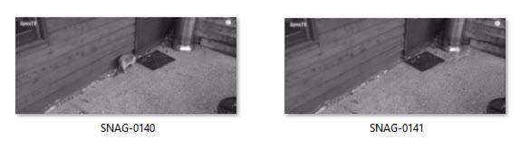
In the above, we see a cat that is doing typical cat hunt and kill behavior on a man’s porch. Then we see the cat fade out slowly like the Alice in Wonderland Cheshire Cat. The man who submitted the video claimed that it was from his CCTV feed and he never saw anything like that before in his life. Yeah, I’ll agree with him at that. However, the likelihood that this video being real and legitimate is rather low.
Cat’s so not need to develop this ability. They are already expert hunting and killing machines. Can you just imagine a cat appearing out of the air and attacking? Yikes!
Here is another hoax that is apparently well done. In it, it portrays a car fading into nothing. Note the white car in frame 0126. In frame 0127, it starts to fade out, and in frame 0128, it is all but disappeared.
Now, this does not have to be a teleportation event. Perhaps they had an invisibility generator in the car. (Even if they had one, they switch on and switch off. They do not fade in and fade out.) Please believe me, using the technology circa 1981, you “pop” in and you “pop” out. You never fade.
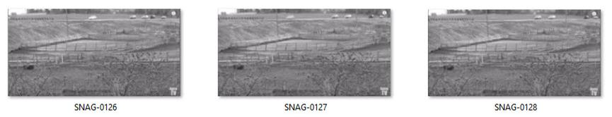
Fakes and hoaxes aside, there are many instances of “high strangeness” that are now easy to film. While there are still legions of skeptics regarding these events, they do occur and should be investigated.
Conclusion
There are examples of exit and egress in and out of our reality all around us. Here, we describe just some of the many examples that have been accidentally recorded on dash cameras.
The knowledge that there are other realities “out there” should be sufficient for a relatively intelligent person to conclude…
- Time is not what we think it is.
- Good and bad are related to experiences relative to a given reality.
- The ability to enter and leave other realities is not something that the average person should have access to.
- If we are in this singular reality, we need to ask ourselves WHY this one?
- Who are these organizations that travel in and out of reality, and why do they do so?
Take Aways
- Roads and intersections provide stable coordinates for dimensional and time travel using vehicles.
- Examples of MWI “world line” switches are everywhere.
- Any extraterrestrial with sufficient technology to visit the earth would have the ability to apply some of that technology to the MWI.
- There are people, humans, and others who use technology to enter and leave our reality.
- It is unknown why anyone would want to use this technology to visit our reality.
FAQ
Q: Have you ever used a vehicle to perform time travel?
A: No. Nor have I used a vehicle, as described herein, to conduct any kind of MWI slide. My utilization of the MWI was strictly functional towards my operational needs. Thus, the idea that someone would want or need to conduct “time travel” or use a vehicle to surf the MWI is a mystery to me that I cannot explain. Nor can I justify it’s use.
Q: Why won’t the government make this knowledge public?
A: As far as I know, no government has this ability. There are organizations, however, that operate within a given nation or government structure that operate independently. Such as MAJestic operates as a “carve out” within the United States government. This knowledge and information if far, far, far, FAR too powerful for the average person to access. For sentience sorting, humans need to be kept ignorant and isolated until the sorting process is complete.
Q: Why do people make fake hoaxes?
A: Ignorance, boredom, greed, or malevolence. It distracts from real observations and makes it difficult to identify and learn from.
MAJestic Related Posts – Training
These are posts and articles that revolve around how I was recruited for MAJestic and my training. Also discussed is the nature of secret programs. I really do not know why the organization was kept so secret. It really wasn’t because of any kind of military concern, and the technologies were way too involved for any kind of information transfer. The only conclusion that I can come to is that we were obligated to maintain secrecy at the behalf of our extraterrestrial benefactors.


MAJestic Related Posts – Our Universe
These particular posts are concerned about the universe that we are all part of. Being entangled as I was, and involved in the crazy things that I was, I was given some insight. This insight wasn’t anything super special. Rather it offered me perception along with advantage. Here, I try to impart some of that knowledge through discussion.
Enjoy.


MAJestic Related Posts – World-Line Travel
These posts are related to “reality slides”. Other more common terms are “world-line travel”, or the MWI. What people fail to grasp is that when a person has the ability to slide into a different reality (pass into a different world-line), they are able to “touch” Heaven to some extent. Here are posts that cover this topic.


John Titor Related Posts
Another person, collectively known by the identity of “John Titor” claimed to utilize world-line (MWI egress) travel to collect artifacts from the past. He is an interesting subject to discuss. Here we have multiple posts in this regard.
They are;